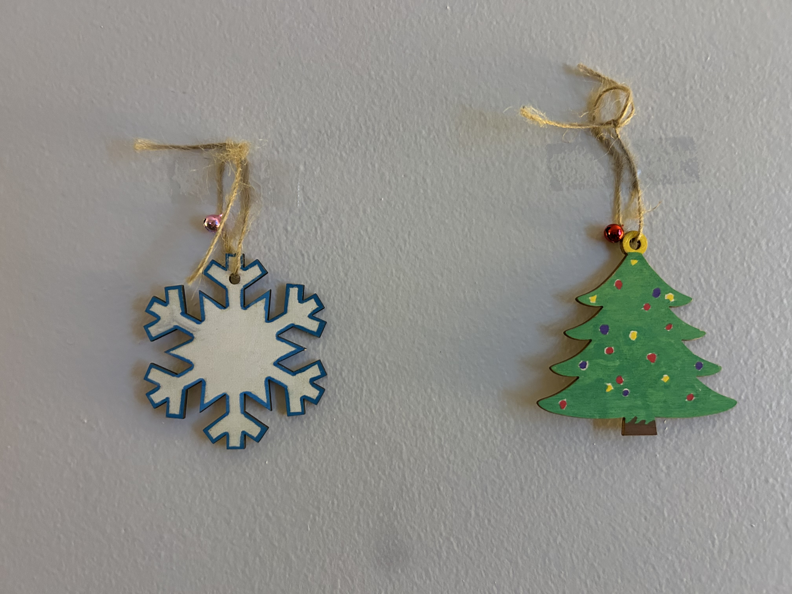
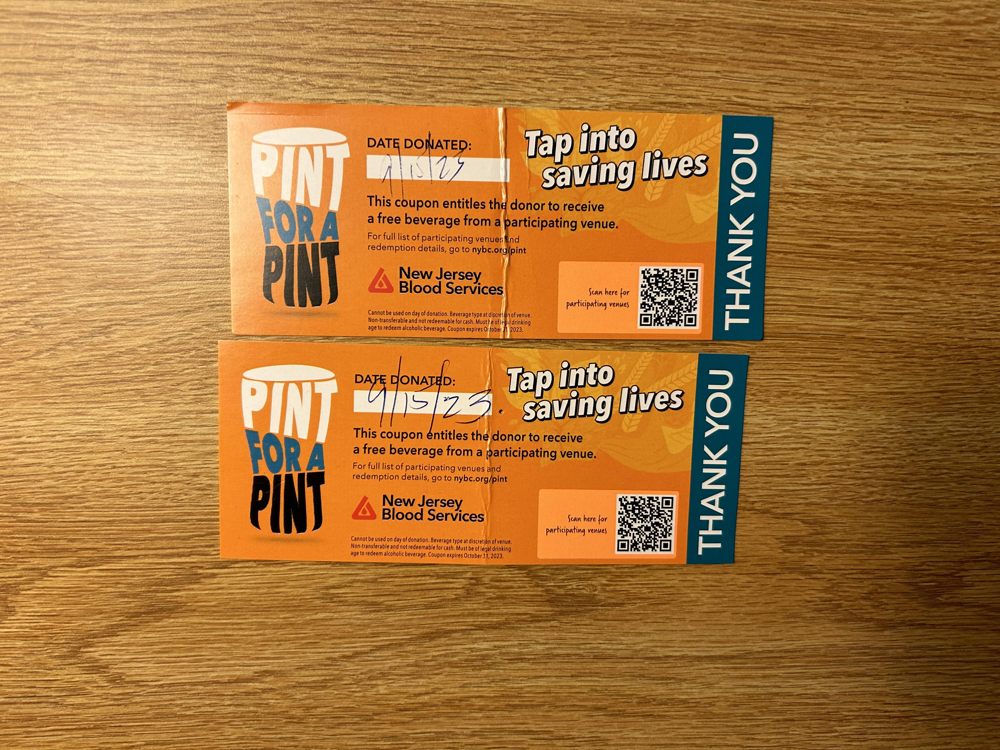
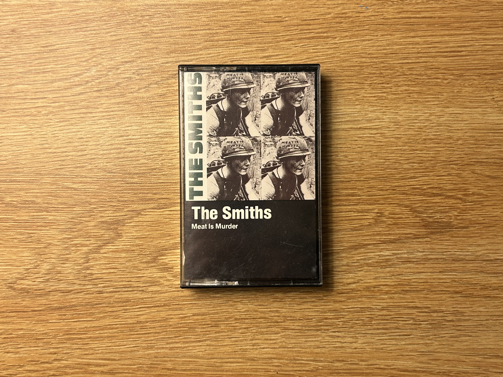
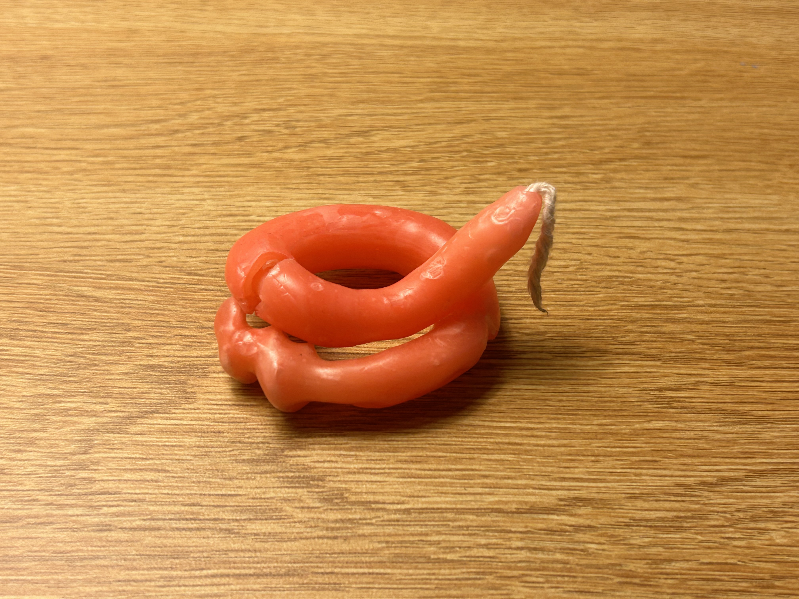
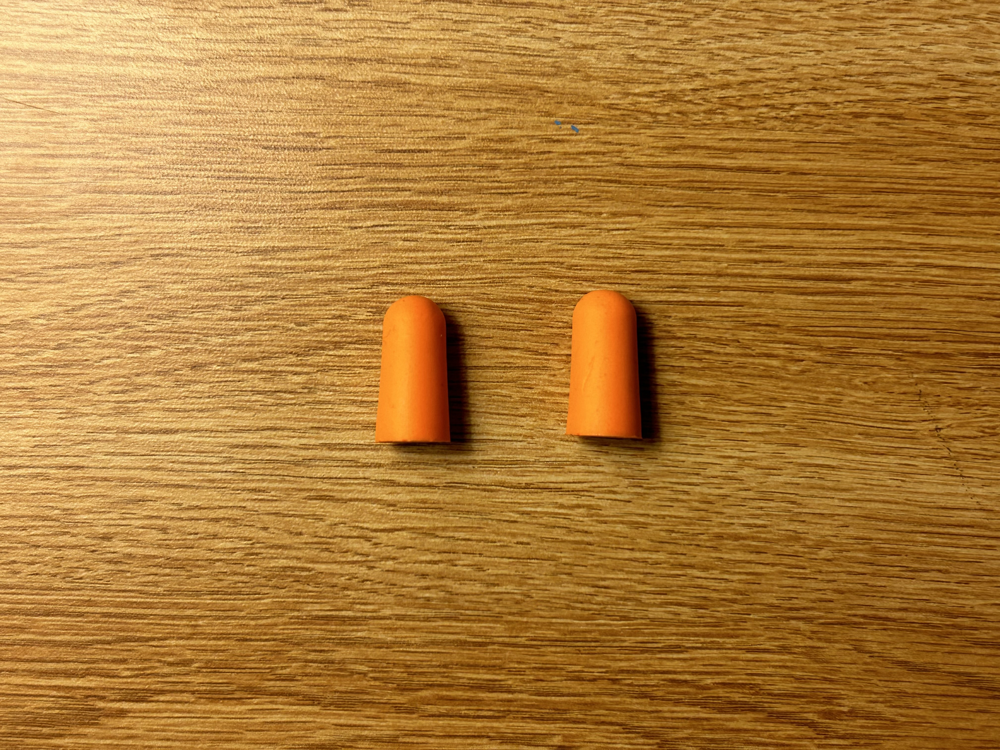
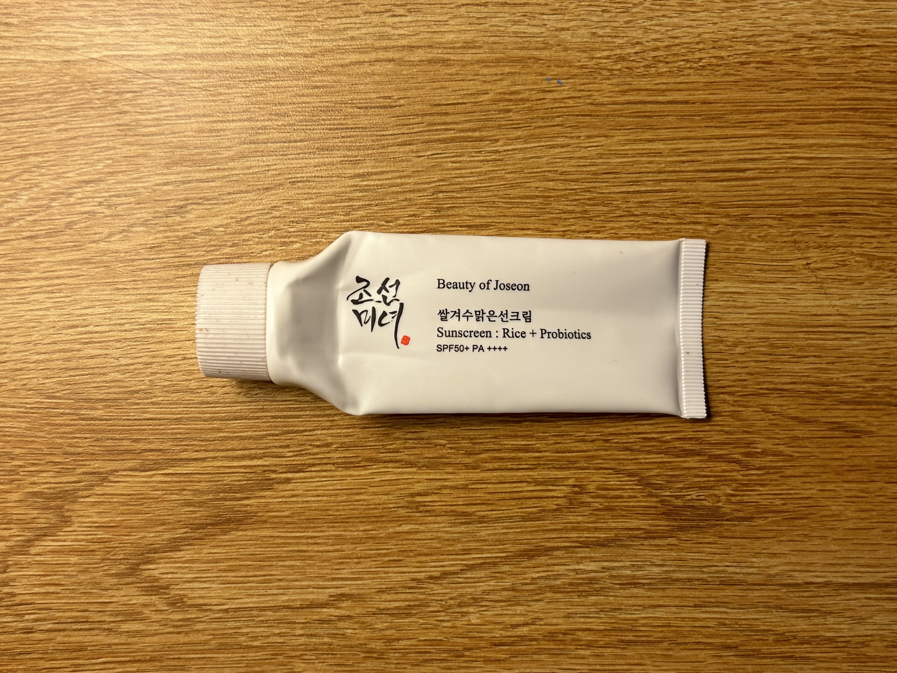
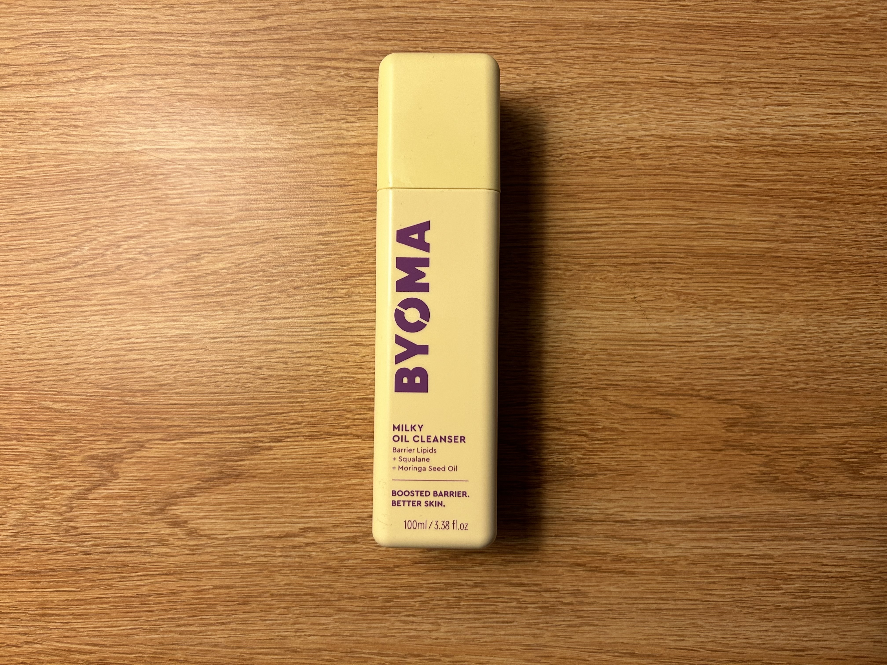
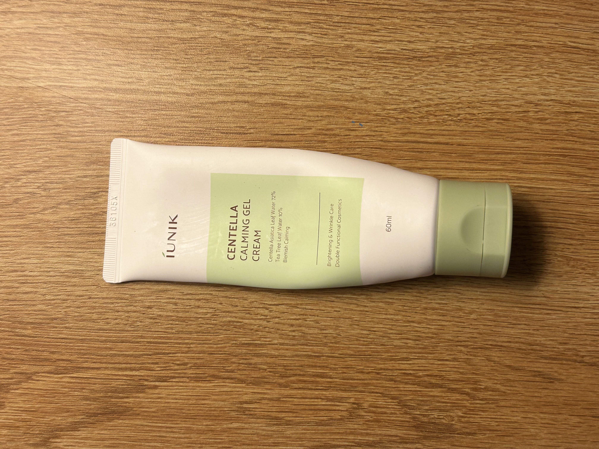

Every day we discard countless mundane items without a second thought. As cheesy as it may sound, each of those items has its own story behind it. Discarding something is not even the end of its story, just the end of its story involving the person who discarded it. Mindfully acknowledging what we choose to discard and how we discard it could collectively reduce the number of items that end up in landfills. Trash of the Week is a part of my weekly practice for this goal.
Each week, I select nine random items that I have chosen to discard in some manner. I try to select the most intriguing items that I discard each week. For each item, I recount the item’s story and mindfully reflect on how I have used it and its origins. This practice was partially inspire by others who have done similar projects to document their waste.
This edition of Trash of the Week coincides with my first week back at my dorm after winter break. I find that a cluttered space leads to a cluttered mind for me. Thus, in preparation for the beginning of the spring semester, I’ve taken it upon myself to declutter my suite and dorm room.
The first item in this group is a small pair of gold-colored hoop earrings, with twists as the hoop and a circumference of about one inch. I found these while cleaning the couch back in September, shortly after moving. I did not know who they belonged to and decided to leave them on the living room wall of my suite. Months passed and they have gone unclaimed. Hence why I have decided to donate them.
There were two wooden ornaments with a twine loop and a small bell taped to the common area wall—a snowflake and a Christmas tree. They’re both about the same size, about three inches tall. The festive times have passed, and thus, I shall pass along these decorations, back to the suitemate who initially hung them on the wall.
One of my suitemate mates had donated blood back in September, and for doing so he received two Pint-for-a-Pint
vouchers. Pint-for-a-Pint means that in exchange for donating a pint of blood, the donor can get a pint of beer (or some other beverage) for free. My suitemate, who donated blood, is underaged, so he gave them to me. The vouchers are orange with some teal accents, which are my two favorite colors, so I had them pinned to my bulletin board on display. However, I don’t really like going to bars. Instead of letting them go to waste, I gave them to another suitemate who is also 21 years old.
The cassette case displays the album cover of Meat is Murder by The Smiths. I don’t quite remember when I got it, but it was a while ago. I purchased it from a yard sale, and it was already used. I recently listened to the tape and was very disappointed that it was not playing properly. One of my friends makes music, so I gave it to her to record over, since the original recording on the cassette was janky.
In September, I went on a leadership retreat for the SJE, which is the Center for Social Justice and Education at Rutgers University, and it is one of the four cultural centers on campus. I am a student leader for one of the organizations involved with the SJE, and part of my duty was to go on said retreat. I was reluctant at first because I had to arrive at the SJE by 7 a.m. on a Saturday for departure. I ended up having a blast! The retreat took place at a YCMA camp in north-western New Jersey. One of the activities we did was candle making.
The process involved repeatedly dipping a string (the wick) in hot wax and then cold water. There were a few different colors: yellow, red, orange, and pink—but they all looked similar. I wanted to make a cool swirly candle with different colors. Everyone was crowded around the wax, so it was difficult to switch colors and move around. My candle ended up not as cool or awesome as I initially envisioned it to be in my head. I had lots of fun with my friends in the process, which is what really matters! The candle broke on the way home because I shove it in my duffle bag, wrapped in a t-shirt. I want to finally attempt to fix my candle, by melting it down and starting over, or perhaps I will just melt the cracks and fuse them together.
In October, I went to a show at Demarest Hall with my friend, Sarah. We wandered over to the table where students were selling merchandise to support the bands and the venue. We bought matching pins. Sarah bought a mango pudding pin, and I bought a lychee pudding pin. At the same table, there were earplugs. The show was very loud, and the earplugs did not really work because they didn’t fit my ears. But it’s okay because I had a lot of fun. Sarah and I moshed and danced for a while, then left early because we both had class early the next morning. After Sarah dropped me off at my dorm, I took the earplugs out of my pocket, and put them away, subconsciously knowing that I would forget about them. Months later in January, I found these little orange foam ear plugs cluttering my already somewhat cluttered nightstand drawer. I barely used them, and I knew I wasn’t going to use them. Thus, I tossed them in the trash.
My suitemate and friend, Dion, has very sensitive skin. His skin is so sensitive that he could not handle this particle sunscreen. He gave it to me instead of throwing it out and letting it go to waste. Fortunately, I do not have very sensitive skin and it worked fine for me. The sunscreen was packaged in a white tube with the product name and Korean words on it. A few days ago, I squeezed the last possible dollop of sunscreen out of the tube, and it is now empty. I have no use for an empty tube, so I recycled it.
Over the summer, I worked in retail at Ulta Beauty. Before this summer, I had never heard of the brand Byoma
I was intrigued by the boxy and colorful packaging. The products had a fun and almost cartoony vibe. The oil cleanser came in a yellow rectangular bottle with purple lettering. I bought it with my employee discount to test it out. It worked fine and as intended. However, I still prefer the Kose Softymo Speedy Cleansing Oil over this one. I finished the cleanser this week and then recycled the bottle.
In late November, I had dinner with my mom. We ate phở and afterward, we went shopping. I was running low on moisturizer. The weather was getting colder, so my skin was getting drier. My mom bought me this moisturizer, which came in a white tube with a green lid and green label on the front. I also finished the last bit of the gel cream this past week, and then recycled them tube.
 hoop earrings
hoop earrings

wooden christmas decorations
 pint-for-a-pint voucher
 Meat is Murder by The Smiths cassette tape
 handmade candle
 earplugs from live show
 Beauty of Joseon Sunscreen
 Byoma Milky Oil Cleanser Face Wash
 Iunik Centella Calming Gel Cream
| item | weight | source | location | cost | owned | mode |
|---|---|---|---|---|---|---|
| hoop earrings | 6 grams | gap in the couch | living room wall | free (found) | 5 months | donate |
| x-mas decor | 30 grams | festive suitemate | living room wall | free | 1 month | donate |
| donor voucher | 5 grams | underaged suitemate | desk cork board | free | 4 months | donate |
| cassette | 65 grams | yard sale | closet | $8 | 2 years | donate |
| candle | 45 grams | self-made at club | dresser | free | 4 months | repurpose |
| earplugs | very light | live show | nightstand drawer | free | 3 months | trash |
| sunscreen | 50 grams | suitemate | dresser | $12 | 4 months | recycle |
| face wash | 100 grams | Ulta | bathroom | $14 | 5 months | recycle |
| gel cream | 60 grams | mom | bathroom | $10 | 3 months | recycle |
woohoo!
As I was packing to return to my dorm after winter break, I rediscovered my cassette collection. I was excited to get back into listening to the old classics such as Depeche Mode and Jimi Hendrix. Despite my aversion to Morrissey, I was surprised to discover that I had a cassette from The Smiths. Though Meat is Murder is not my favorite album by The Smiths, I was still devastatingly disappointed by the lack of consistent sound coming for the tape. I got scared that perhaps my cassette player was the problem, and I tested it out with another great album, Shooting Rubberbands at The Stars by Edie Brickell & New Bohemians.
As I decluttered this week, I also rediscovered and reflected on all the memories that my trash
holds. One man’s trash is another man’s treasure. I try not to throw stuff out because the thought of overcontributing to a massive landfill overwhelms me. I like to use things to their fullest and repurpose things if they cannot be recycled or donated. This week, I only threw out one item, the earplugs, because there was no alternative use I could think of for them. If you, the reader, have any suggestions for repurposing trash,
let me know in the comments section below. Thank you for reading this week’s edition of Trash of the Week! Don’t forget to tune in next week for even more hot garbage!